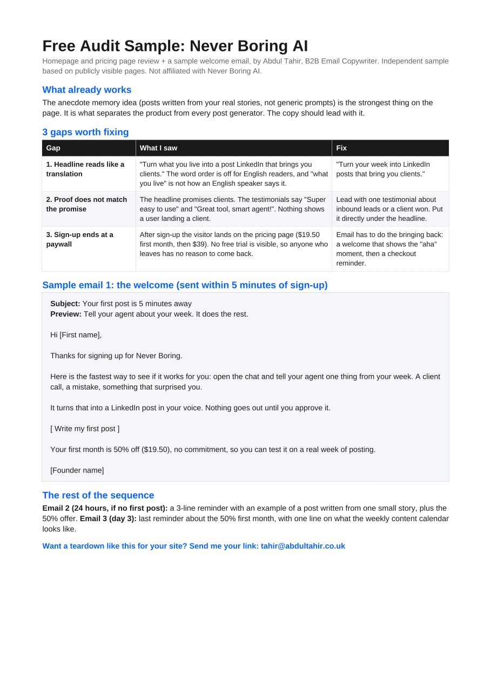

Disclosure: This is an independent sample based on publicly visible pages. It was not commissioned by, and is not affiliated with, Never Boring AI.

What already works
The strongest positioning idea is the anecdote-memory concept: posts are written from the user’s real stories rather than generic prompts. That is the differentiator. The copy should lead with it more clearly.
Three gaps worth fixing
| Gap | What I saw | Direction |
|---|---|---|
| Headline reads like a translation | The promise is understandable, but the phrasing feels less natural than the product idea deserves. | Lead with the simple outcome: turn the week into LinkedIn posts that bring clients. |
| Proof does not match the promise | The headline implies business outcomes, while the visible proof focuses more on ease of use. | Place proof that supports inbound leads or client conversations directly under the promise. |
| Sign-up ends at a paywall | A new user can land on pricing before getting a meaningful “aha” moment. | Add a short welcome flow that gets the user to create a first post, then remind them to return. |
Sample email 1: the welcome
Watch the sample email type out.
The rest of the sequence
Email 2, 24 hours later: a short reminder with an example of a post created from one small story, plus the introductory offer.
Email 3, day 3: a final reminder about the first-month offer, with one line showing what the weekly content calendar can look like.
Written by Abdul Tahir
B2B Copywriter & Ghostwriter. I audit messaging, write cold email and help founder-led content sound more human.
Want a teardown like this? →